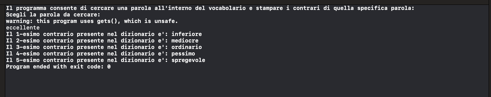
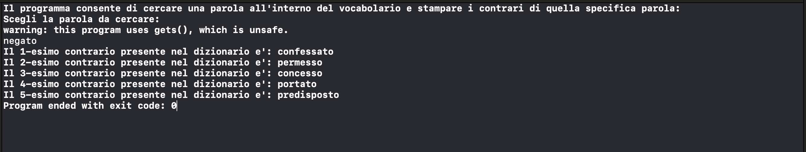
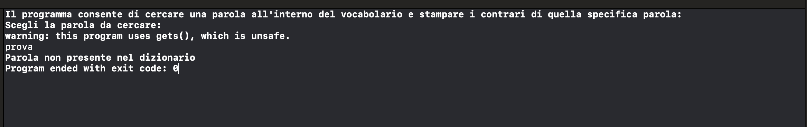

Dizionario dei contrari
Home
Codice in C
Primo Test
In questo primo test cerchiamo la parola "eccellente" e ci stampa i contrari "inferiore", "mediocre", "ordinario", "pessimo", "spregevole"

Secondo Test
In questo secondo test cerchiamo la parola "negato" e ci stampa i contrari "confessato", "permesso", "concesso", "portato", "predisposto"

Terzo Test
In questo terzo test cerchiamo la parola "prova" e visto che non è presente nel dizionario ci stampa "Parola non presente nel dizionario"
